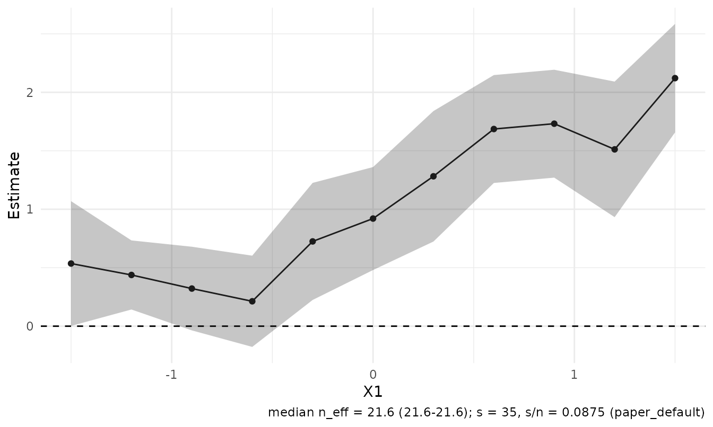
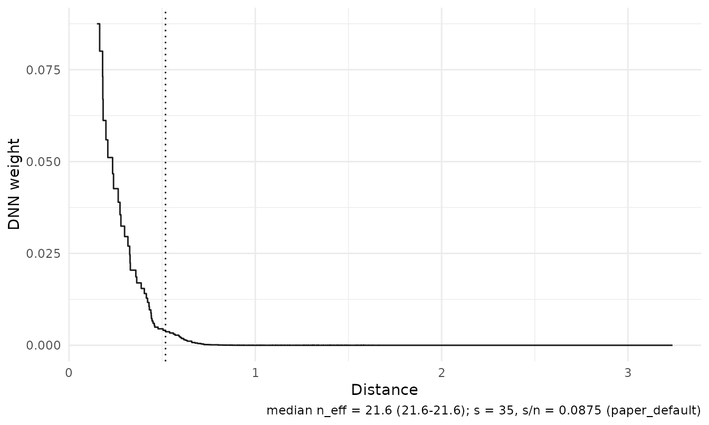
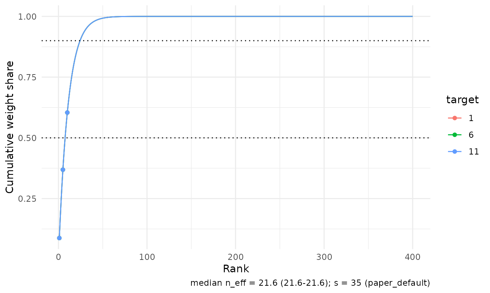
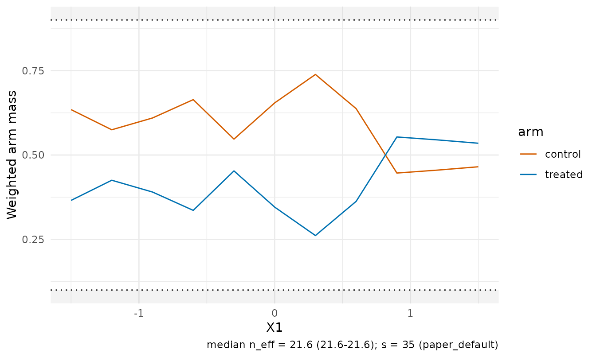
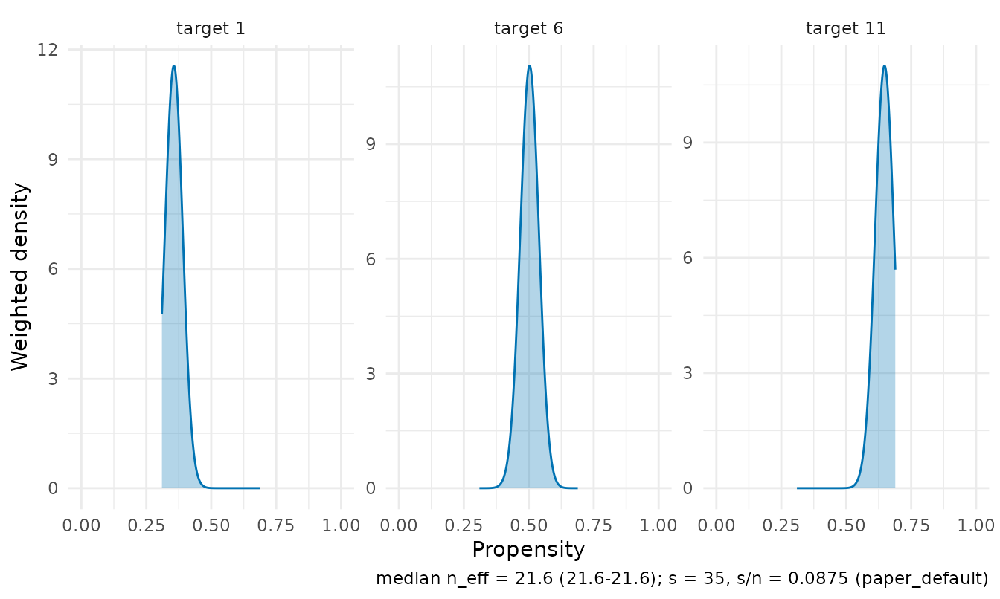
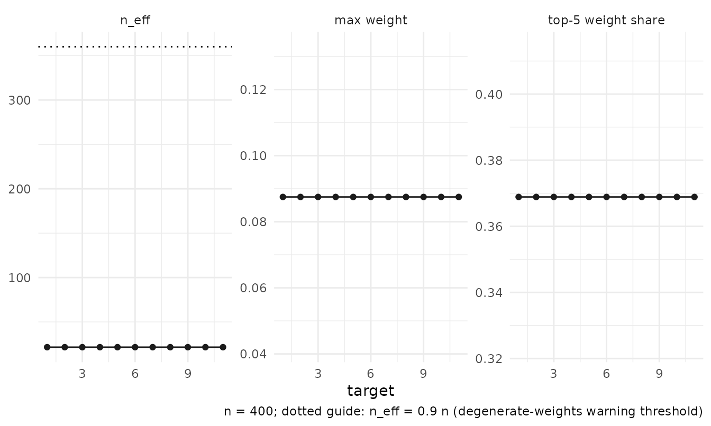
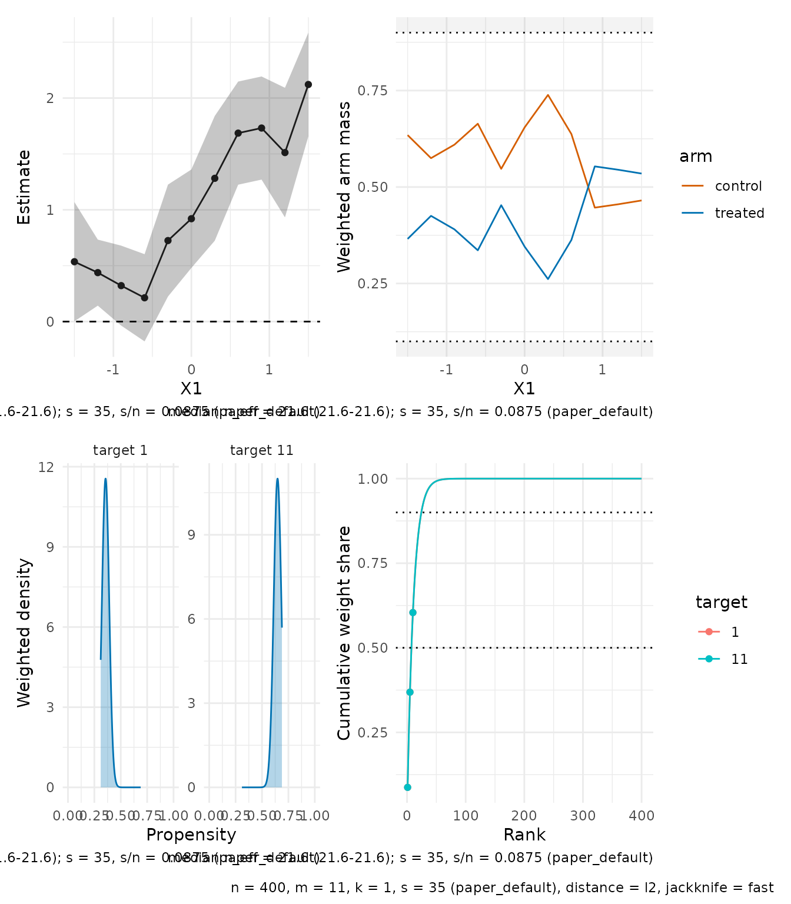
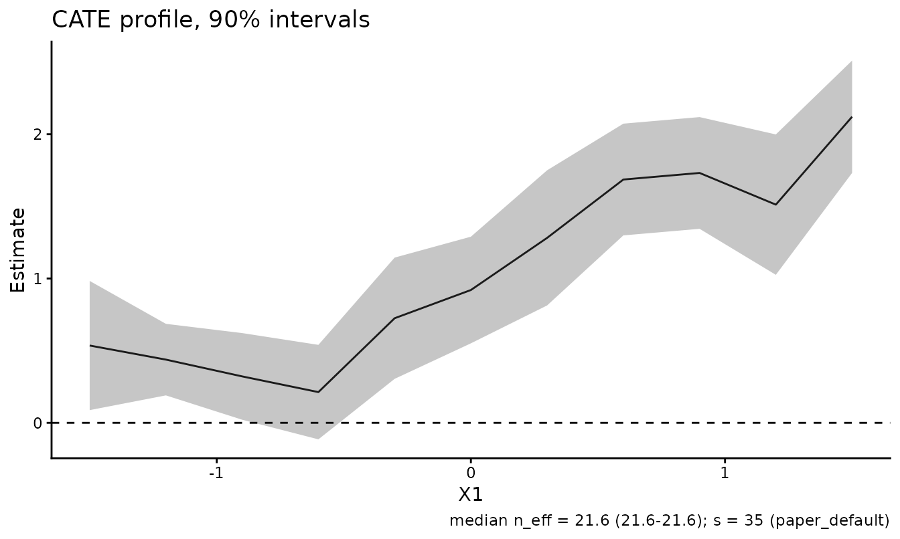

RdistNN ships ggplot2-based views of fitted local estimators. ggplot2
(and, for dashboards, patchwork) are suggested dependencies: everything
in this vignette degrades with an actionable message when they are
missing, and every panel is a regular ggplot object that can be extended
with +.
The running example is a CATE fit with oracle nuisance columns, evaluated along a profile in the first covariate.
library(RdistNN)
set.seed(42)
n <- 400
X <- cbind(X1 = runif(n, -2, 2), X2 = rnorm(n))
e <- plogis(0.4 * X[, "X1"])
tau <- 1 + sin(X[, "X1"])
m0 <- X[, "X1"] - 0.5 * X[, "X2"]
treat <- as.integer(runif(n) < e)
Y <- m0 + treat * tau + rnorm(n, sd = 0.5)
df <- data.frame(X, T = treat, Y = Y, e = e, m0 = m0, m1 = m0 + tau)
X0 <- cbind(X1 = seq(-1.5, 1.5, length.out = 11), X2 = 0)
fit <- cate_dnn(
data = df, x_cols = c("X1", "X2"), y_col = "Y", t_col = "T",
e_col = "e", m0_col = "m0", m1_col = "m1",
X0 = X0, k = 1L, se = TRUE, jackknife = "fast",
return = c("W", "dx")
)The estimate panel
plot() (equivalently ggplot2::autoplot(),
or plot_estimates() with more options) draws the profile
with jackknife confidence bounds, a zero reference line, and the honesty
caption: the median effective sample size across targets and the kernel
order s with its provenance — here the default paper rule,
since neither s nor tuning was supplied.
plot(fit)
Small non-profile target sets render as a forest layout with labels
built from the stored coordinates, and
style =/x_var = override the automatic
choices.
Weight geometry
The weight panels show what the estimator averaged over. The
effective kernel view is the most instructive: DNN weights as a
data-driven kernel in distance space, with the rank-s
radius marked.
plot_weights(fit, type = "kernel", targets = 6L)
plot_weights(fit, type = "cumulative", targets = c(1L, 6L, 11L))
Overlap diagnostics
For CATE fits, plot_overlap() shows whether both
treatment arms carry weight near each target. With simplex weights the
treated and control masses partition one, so the treated mass is the
local treated share; shaded bands mark shares outside
share_limits.
plot_overlap(fit, type = "mass")
The propensity view draws the weighted propensity distribution at
selected targets when observation-level propensities are available (as
here, through e_col), and a weighted q10–q90 summary
otherwise.
plot_overlap(fit, type = "propensity", targets = c(1L, 6L, 11L))
Weight diagnostics facets
autoplot() on a diagnostics() frame tracks
the effective sample size (with the degenerate-weights guide at
0.9 n), the maximum weight, and the top-5 weight share
across targets.
ggplot2::autoplot(diagnostics(fit))
The dashboard
plot_dashboard() composes the panels with a metadata
annotation. It requires patchwork; without it the panels are returned as
a named list. Panels whose inputs are unavailable are substituted rather
than failing the dashboard — a matrix-interface fit without stored
treatment gets the diagnostics facets in place of the overlap panel.
plot_dashboard(fit)
Customising panels
Every builder returns a plain ggplot object; add layers, scales, or a different theme as usual.
plot_estimates(fit, level = 0.9) +
ggplot2::labs(title = "CATE profile, 90% intervals") +
ggplot2::theme_classic(base_size = 11)
For fully custom figures, the tidy frames behind the panels are
exported: plot_data_estimates(),
plot_data_weights(), and
plot_data_diagnostics().
Related Articles
-
Notation and package
conventions:
vignette("notation-and-conventions", package = "RdistNN")explains the statistical scale and provenance of the fields being plotted. -
Diagnostics and reporting:
vignette("diagnostics-reporting", package = "RdistNN")documents the underlying diagnostic fields and availability rules. -
Getting started:
vignette("getting-started", package = "RdistNN")provides compact fitted objects for a first plotting workflow.